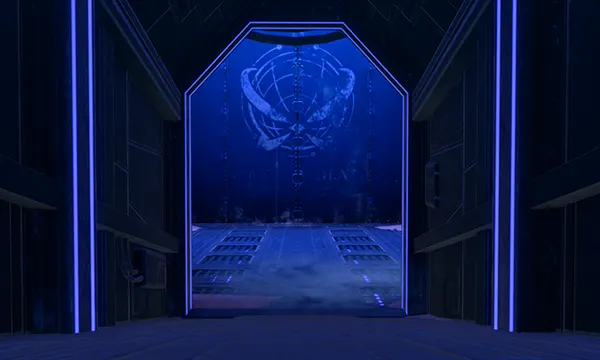

Hypatia
Open in the wiki →City. A Grand Megalith placed in a gigantic transportation network called EX-207
- Type
- city
- Connects to
- Cave Behind the Falls

City. A Grand Megalith placed in a gigantic transportation network called EX-207